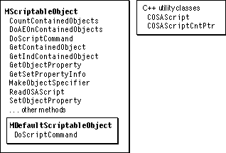
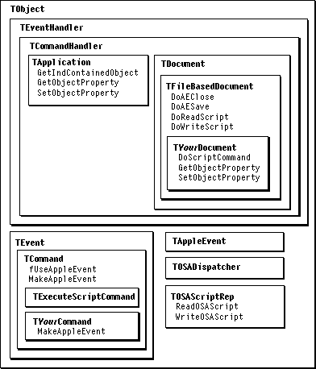

Legacy Document
Important: The information in this document is obsolete and should not be used for new development.
Important: The information in this document is obsolete and should not be used for new development.


Overview
MacApp supports the Apple event object model, which is described in "Scripting Terminology," beginning on page 140. MacApp uses a global Apple event dispatcher object to serve as an intermediary between the Apple Event Manager (and its Object Support Library component) and the application objects that can work with Apple events.Figure 14-1 shows MacApp's mixin and C++ utility classes for scripting, and Figure 14-2 shows classes, methods, and fields used to support scripting.
The objects in a MacApp application are organized in a hierarchy that extends from the application object, to its document objects, to the documents' window objects, and to the windows' view objects. This hierarchy is shown in Figure 1-1 on page 7. An object in the hierarchy that needs to respond to Apple events mixes in the multiple inheritance class
MScriptableObject. That enables the object to describe itself in terms the Object Support Library (OSL) can understand, to contain Apple event objects (such as shapes, paragraphs, words, and so on), to get and set object properties for the objects it contains, and to have an attached script (which can respond to Apple events sent to the object).Figure 14-1 Mixin and C++ utility classes for scripting support

MacApp's global Apple event dispatcher works with the Apple Event Manager, the OSL, and the scriptable objects in the application's object hierarchy to determine which object is the target for an Apple event, and to
Figure 14-2 Classes, methods, and fields used to support scripting

hand the event off to that object. If a specified object has an attached script, the script gets first shot at handling the Apple event. If an event doesn't specify a target, it is sent to the default target. MacApp specifies the application object as the default Apple event target.
Creating an Object Specifier
For an object to receive Apple events, it must be able to create a specifier for itself.An object that mixes inMScriptableObject can call MakeObjectSpecifierto create an object specifier.MakeObjectSpecifiersupports the specifier forms offormName,formAbsolutePosition, andformUniqueID. You overrideMakeObjectSpecifieronly if you need to make object specifiers for other forms.Your application makes object specifiers for Apple events when implementing recordable commands (see "Recipe--Defining a Recordable Command Class," beginning on page 353). For example, the
MakeAppleEventmethod from theTZoomInCommandhas this call:
fIconDocument->MakeObjectSpecifier( directObjectDesc, fIconDocument->GetSpecifierForm());TheTDocument::GetSpecifierForm method returnsformName, so the MakeObjectSpecifier method attempts to create an object specifier for the form name. If MakeObjectSpecifier cannot make a specifier for the preferred form, it will try to use one of the other forms, eitherformName,formAbsolutePosition, orformUniqueID.
- Note
- The
TApplicationclass overrides MakeObjectSpecifier to return aNULLspecifier that identifies the application as the ultimate container--the first object queried by the OSL when resolving an object specifier.